Сервис GitHub¶
Учимся читать и использовать в своем проекте чужой код с GitHub¶
Перенимаем опыт других разработчиков: ищем, читаем, клонируем, внедряем…
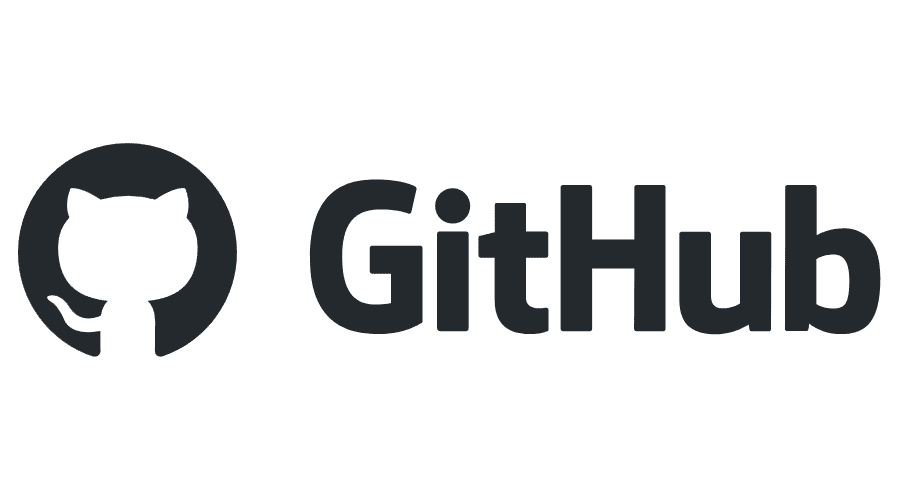
Как только вы начинаете погружаться в атмосферу IT-сообщества, в вашем информационном поле постепенно формируется круг экспертов, которых вы встречаете на конференциях, подкастах и за просмотром онлайн-митапа крупной компании. Большинство советов, которыми делятся опытные разработчики, можно разделить на 3 категории:
Читайте документацию и книги;
Изучайте новый язык или инструмент, используйте его в разработке своего PetProject;
Изучайте чужой код и участвуйте в «open source» разработке.
Касательно книг обычно все понятно, рекомендуют конкретных авторов и печатные издания. Про PetProject тоже довольно ясно: хотите понять, как работает Django? Создайте свой веб-сервис на любую тему. Например, для обработки заказов небольшой пиццерии, с админкой, меню и регистрацией клиентов. В общем, используйте все, что идет из коробки Django, чтобы разобраться, как работает этот фреймворк.
А что по поводу третьего пункта? «Изучайте чужой код…». Обычно мысль на этом обрывается.
Сегодня попытаемся восполнить этот пробел и закрасим «белое пятно». Выстроим цепочку алгоритма, которая поможет начинающим программистам сориентироваться в поиске «чужого кода» и использовании его в своем проекте. Чтобы «не научиться плохому».
Где и как искать код?
Выбрали проект — на что в первую очередь стоит обратить внимание?
С чего начать знакомство с чужим кодом?
Как использовать его в своем проекте?
Как опубликовать свой проект на GitHub?
Где и как искать код?¶
Самой популярной площадкой для поиска и размещения кода является GitHub (https://github.com). Если вы ранее не пользовались этим сервисом, следует начать именно с него.
GitHub — это веб-платформа для контроля версий и совместной работы, которая была запущена в апреле 2008 года. Она была основана Томом Престон-Вернером, Крисом Ванстратом и П. Дж. Хайеттом, а сейчас принадлежит компании Microsoft. Платформа была построена на основе системы контроля версий Git, созданной Линусом Торвальдсом в 2005 году. Git — мощная и эффективная система для управления исходным кодом и другими файлами. GitHub стремился сделать Git более доступным, предоставляя веб-интерфейс и набор инструментов для совместной работы и совместного использования. GitHub быстро стал популярным среди разработчиков открытого исходного кода. Одной из ключевых особенностей платформы является возможность разветвления репозитория, что позволяет пользователям создавать собственную копию проекта и вносить изменения, не затрагивая оригинал. Это упростило для разработчиков совместную работу и участие в проектах с открытым исходным кодом. За прошедшие годы GitHub добавил множество функций и инструментов, чтобы сделать совместную работу еще проще, в том числе:
Запросы на вытягивание (Merge Request), которые позволяют пользователям отправлять изменения в проект для проверки.
Проблемы (Issue), которые позволяют пользователям отслеживать ошибки и запросы функций.
Вики (Wiki), которые позволяют пользователям создавать документацию и другую информацию для проекта.
GitHubPages, который позволяет пользователям создавать и размещать веб-страницы для своих проектов.
GitHubActions, которые позволяют пользователям создавать и развертывать свой код с помощью GitHub.
В 2018 году Microsoft приобрела GitHub за 7,5 млрд долларов. С тех пор он продолжал развивать и улучшать платформу, включая запуск GitHubDiscussions, GitHubCodespaces и GitHubActions. Сегодня GitHub — это крупнейшее хранилище исходного кода в мире с более чем 40 миллионами пользователей и более чем 200 миллионами репозиториев.
Для поиска проекта достаточно ввести в строку поиска одно или несколько ключевых слов.
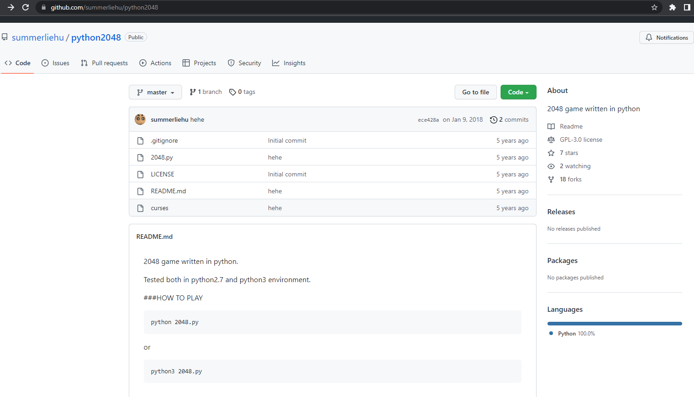
Рисунок 1 — Репозиторий с плохой структурой проекта
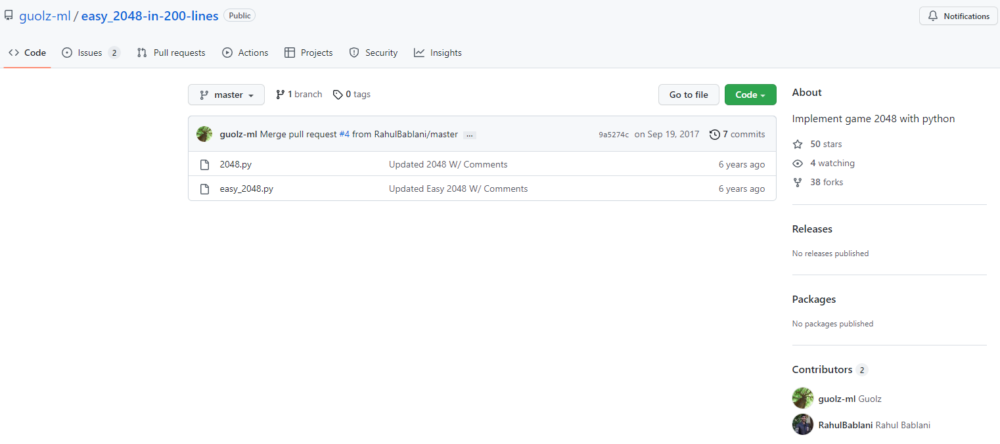 Рисунок 2 — Репозиторий без описания и инструкций
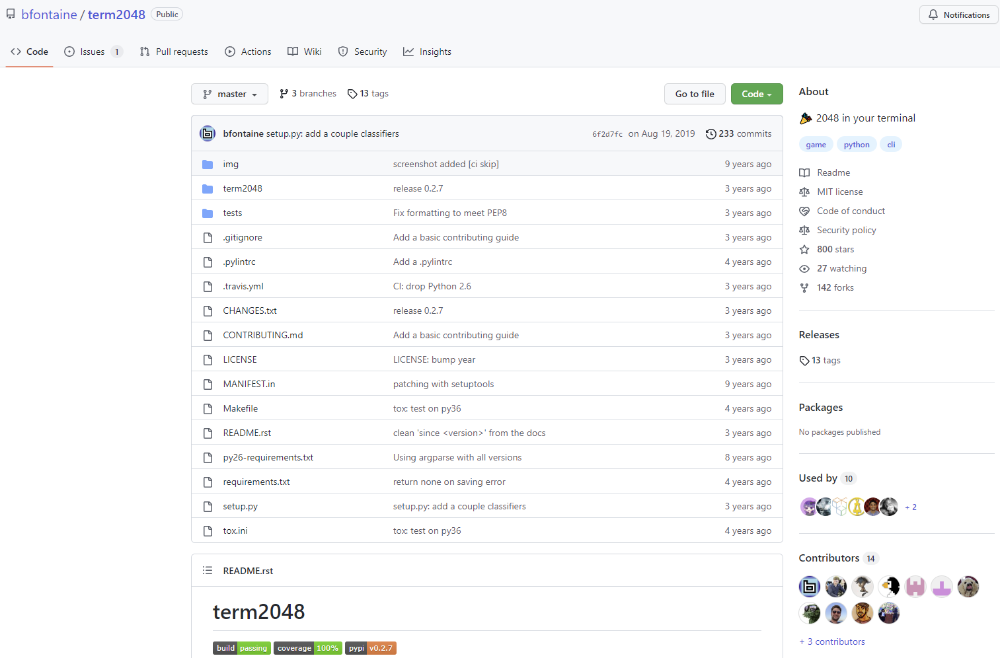
Рисунок 3 — Репозиторий с хорошей структурой
Посмотрим описание «Readme.md»
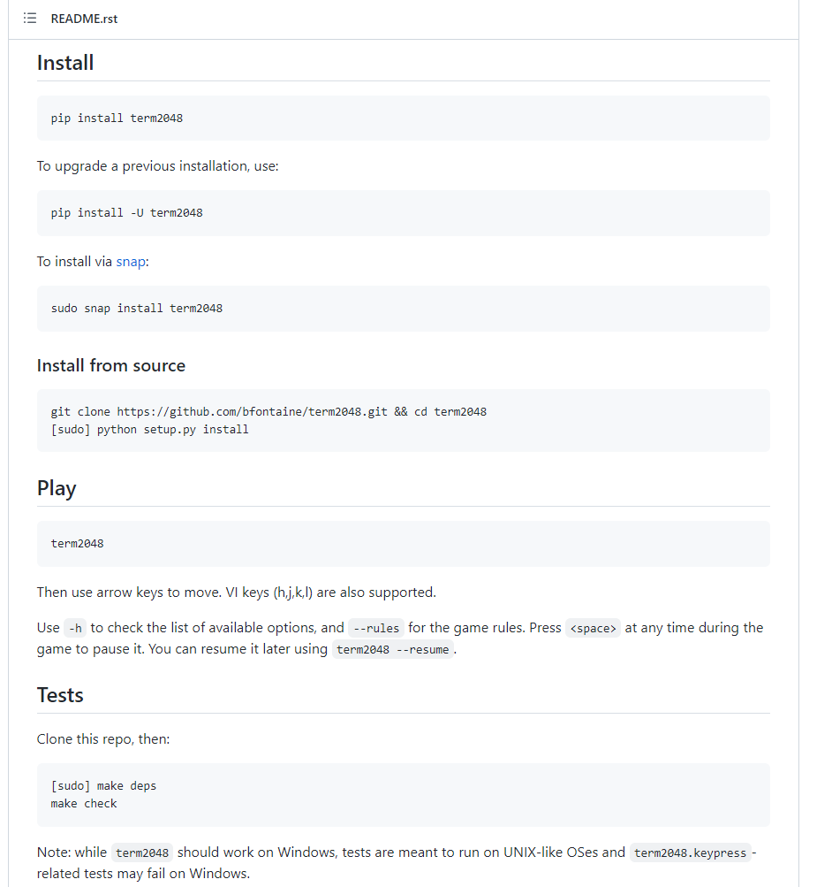
Рисунок 4 – Инструкция по работе с кодом проекта
После знакомства с инструкцией приступаем к просмотру файлов проекта, чтобы выполнить «поверхностную реверсивную инженерию» объектов и понять его структуру. Этот процесс может занять некоторое время. В результате нам надо разобраться в коде и оценить его достоинства и недостатки, понять зависимости и попробовать составить структуру проекта в виде блок-схемы или псевдокода. В процессе изучения кода можно встретить различные решения, которые мы бы могли реализовать в этой задаче иначе, это вполне распространенная практика. Давайте кратко постараемся определить, каковы признаки «хорошего кода»:
Структура проекта понятна.
Задачи распределены по отдельным файлам.
Предусмотрена модификация кода проекта.
Реализована поддержка разных операционных систем (ОС). В коде есть проверка текущей ОС и сценарий корректной работы в случае отличий из-за разных версий ОС.
Ключевые места в коде прокомментированы.
Реализована обработка исключений.
Минимальная зависимость от сторонних библиотек.
Внешние библиотеки представлены в файле requirements.txt.
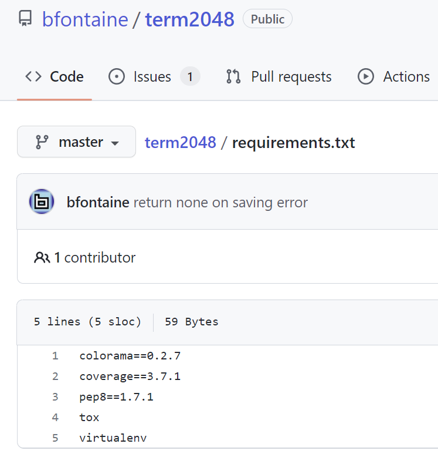
Рисунок 5 — Файл requirements.txt — список сторонних библиотек
Выбрали проект — на что в первую очередь стоит обратить внимание?¶
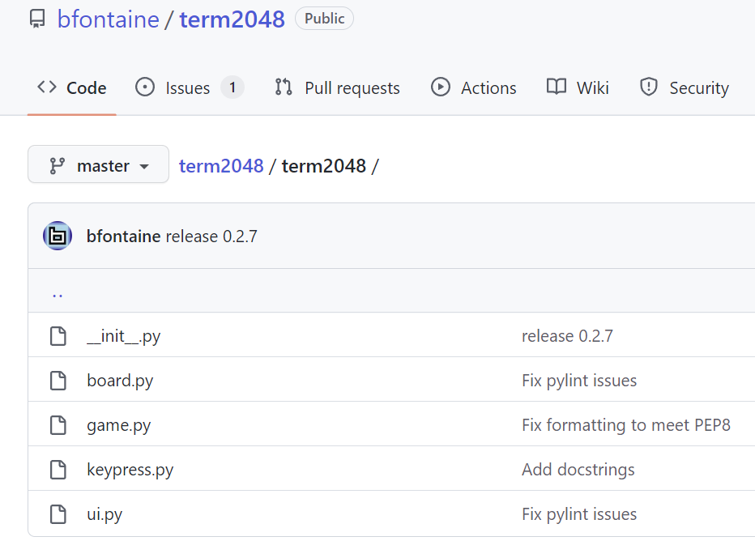
Рисунок 6 — Файлы проекта
С чего начать знакомство с чужим кодом?**¶
Скачаем проект и проанализируем его содержимое. Скачать проект с GitHub можно двумя способами:
используя консольное приложение git;
скачать проект zip-архивом.
Наша цель — не только посмотреть исходный код проекта, но и модифицировать его по мере знакомства с проектом.
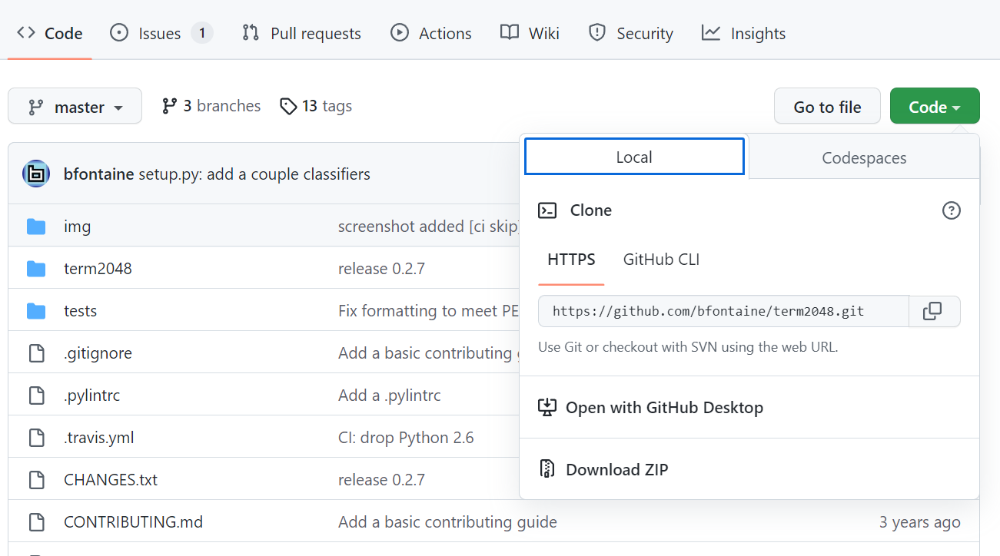
Рисунок 7 — Вкладка загрузки кода с GitHub
В таком случае использование системы контроля версий git нам сильно облегчит задачу отслеживания изменений в проекте. Внося изменения в чужой код, стоит учитывать возможность возникновения ошибок и сбоев на этапе тестирования ПО. Таким образом, мы сможем лучше разобраться в коде, откатить последние изменения и выложить свой проект на GitHub, и т.д.
Приступим к подготовке рабочего окружения. Создадим на компьютере папку, в которой будет размещаться проект. Для примера будем считать, что такой директорией является: «project_github».
Откроем консоль в данной папке и выполним инициализацию нового проекта командой
git init.Выполним загрузку кода из репозитория, используя команду
git pull, добавив в качестве аргумента ссылку на проект: «https://github.com/bfontaine/term2048.git».
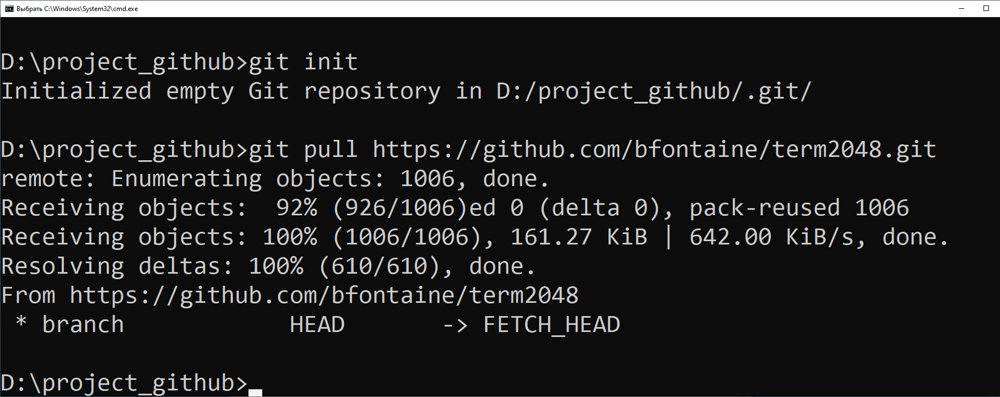
Рисунок 8 — Инициализация локального Git репозитория и загрузка проекта из GitHub
В качестве альтернативы можно использовать команду git clone. Можно сказать, что команда git clone выполняет две команды: git init и git pull.
git init применяется для того, чтобы создать пустой репозиторий, а git pull — чтобы наполнить его из другого репозитория. Поэтому, если вы новый участник проекта, и вам нужно получить код проекта, чтобы с ним познакомиться, то рекомендуется делать git clone:
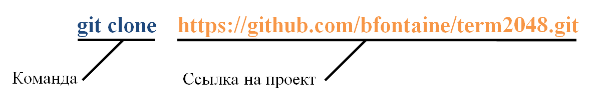
После успешного клонирования проекта из GitHub мы можем приступить к изучению кода. В нашей папке с названием «project_github» появятся все файлы репозитория (см. рисунок), их можно открыть любым редактором, например, «Sublime 3». На что обращать внимание при работе с чужим кодом, чтобы прокачать hard & soft skills?
Постарайтесь внимательно изучить код, учитывая инструкции и комментарии автора.
Может быть так, что вам попался код, который вам непонятен. Например, вы не знакомы с таким объектом/функцией, или ранее вы не использовали его подобным образом. Вам стоит попробовать написать небольшой пример для его исследования и постараться ответить на вопрос: почему разработчик использовал такое решение и чем оно лучше/хуже альтернативного варианта, который известен вам.
Обратите внимание, можно ли сократить код, если встречаются повторения. Например, вынести часть кода в отдельные функции или методы класса, а может, и вовсе стоит вынести участок кода в отдельный модуль. Подумайте об этом.
Если вы видите, что в коде допущены очевидные ошибки, например: отсутствует проверка типа аргументов; в арифметических выражениях отсутствует проверка деления на ноль; или повторяется набор одинаковых действий, которые можно оформить в цикл и т.д., оставьте комментарий и сформулируйте, как сделать лучше. Но не пытайтесь сразу приступать к работе над изменением кода до того, как ознакомитесь с ним полностью. Могут выясниться различные ограничения или структурные решения, которые привели к такой реализации.
Если вы запустите команду git log в каталоге клонированного проекта, вы увидите следующий вывод:
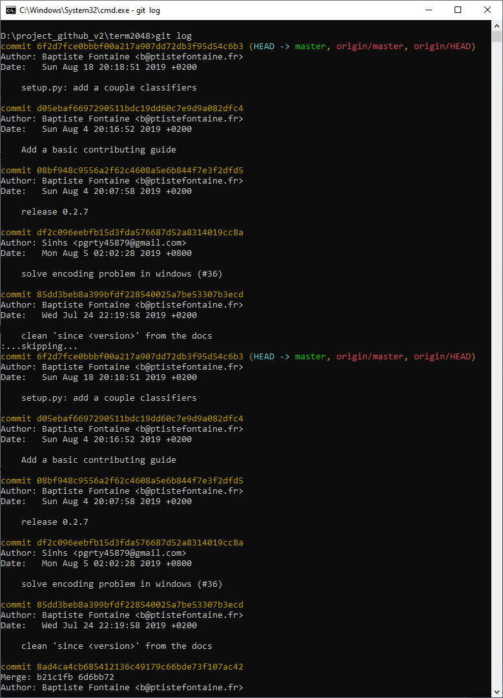
Рисунок 9 — Просмотр изменений командой git log
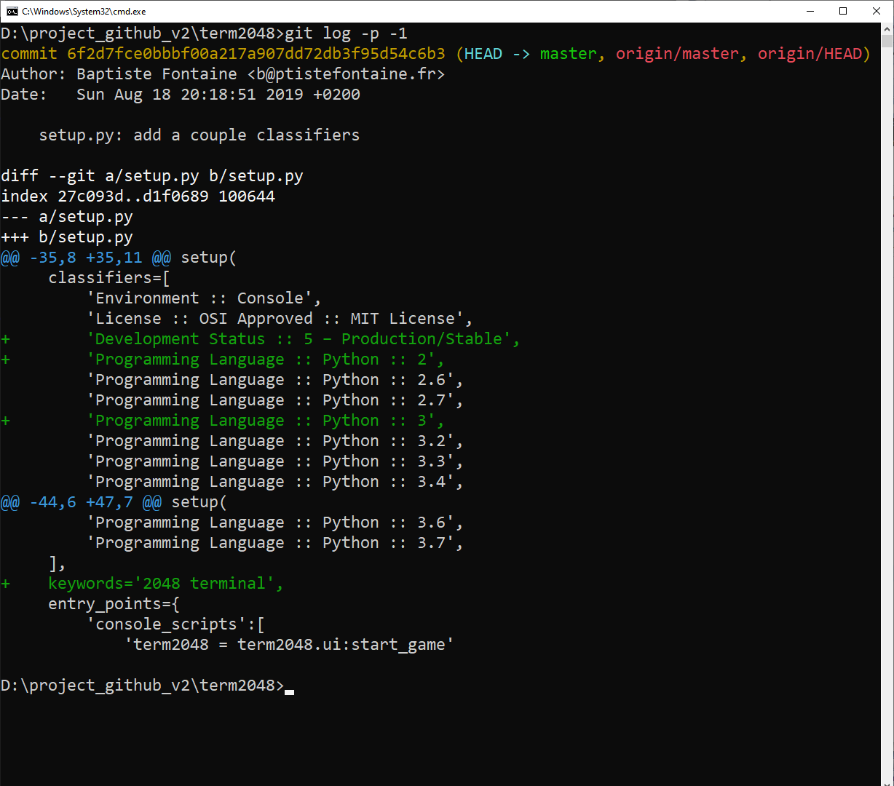
Рисунок 10 — Просмотр изменений последнего коммита
Как использовать чужой код в своем проекте?¶
В процессе подробного изучения кода проекта у вас наверняка появится несколько идей, как его изменить, что-то поменять или добавить новый функционал. Например, мы можем изменить размер игрового поля, количество генерируемых чисел на поле и ввести свой рейтинг-лист с 10 лучшими результатами, и т.д. Так вы не только потренируете изучение чужого кода, но и разовьете навык внесения в него модификаций. Также после завершения этапа отладки кода и тестирования можно выгрузить код в репозиторий GitHub.
Работа с GitHub¶
Первым делом надо зарегистрироваться на сервисе github.com и авторизоваться на сайте (рисунок 11).
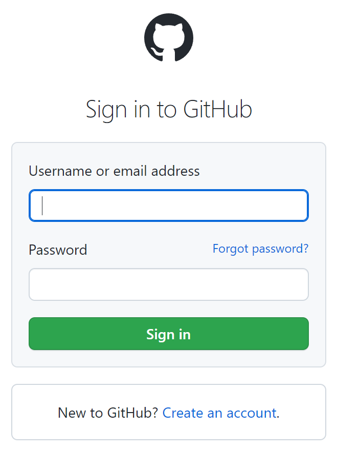
Рисунок 11 — Авторизация в Github
Затем переходим к созданию первого репозитория. В правой верхней части, рядом с иконкой вашего профиля, нужно нажать на значок + (плюс) и выбрать пункт «New repository» (рисунок 12).
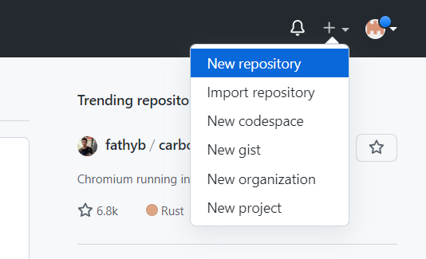
Рисунок 12 — Создание нового репозитория
Откроется страница, на которой нужно выбрать параметры и указать дополнительную информацию о проекте (рисунок 13). Введите название нового репозитория и краткое описание, отражающее главную задачу и способ ее решения, который вы планируете реализовать. Например, в нашем случае можно назвать репозиторий «terminalGame2048» или «py2048CLI». При выборе названия старайтесь использовать «говорящие слова», чтобы разработчику со стороны было интуитивно понятно, о чем ваш проект. Использование «py» укажет, что проект на Python, а слово «game» говорит о том, что это игра. 2048 — это очень известное название игры и многих ее вариаций, а слова «terminal» и «CLI» указывают на то, что игра использует в качестве интерфейса пользователя консольное окно (терминал, командная строка). Таким образом, мы кратко в 3 словах сказали, что это игра 2048, запускается в консоли и написана на языке Python.
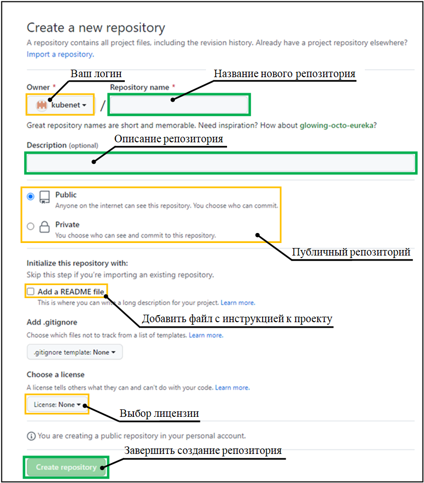
Рисунок 13 — Страница с параметрами нового репозитория
По желанию в поле «Описание репозитория» можно ввести краткую информацию об особенностях проекта. Например, какой новый функционал вы предлагаете реализовать; в чем отличие от классической игры 2048; разработка кода выполнена в рамках конкурса, школьного/студенческого проекта или хакатона. Затем следует выбрать, какого типа будет ваш новый репозиторий — открытый или закрытый:
Открытый/публичный — исходный код этого репозитория будет доступен всем. Вы даете согласие, что другие разработчики могут просматривать и скачивать ваш код. Все проекты open source распространяются в открытых репозиториях.
Закрытый/приватный — данный вариант часто используется коммерческими организациями. Приватные репозитории не отображаются в процессе поиска, и весь код будет скрыт для сторонних разработчиков, не участвующих в разработке этого проекта.
Далее вы можете добавить файл «README» — это документ, в котором разработчики размещают справочную информацию и инструкции по работе с проектом.
Следует помнить о том, что существует большое количество лицензий, которые регламентируют условия распространения и использования кода. В частности, это необходимо для защиты прав авторства разработчиков. Например, вы можете полностью разрешить доступ к вашему коду и дать права на его использование всем желающим в любом виде.
После нажатия на кнопку «Create repository» перед вами откроется страница с вашим только что созданным репозиторием (рисунок 14). Не стоит волноваться о настройках репозитория, их можно изменить в любое время.
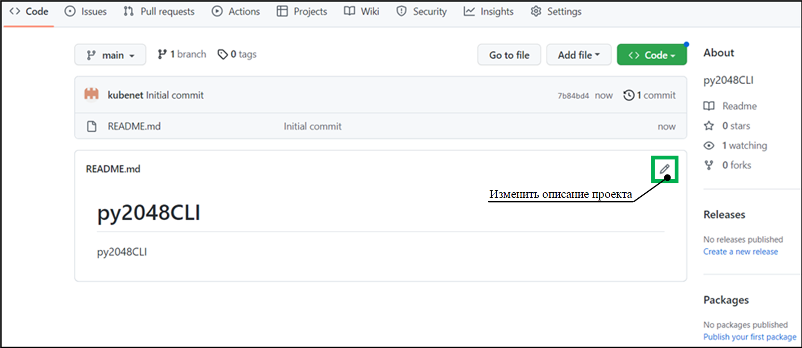
Рисунок 14 — Страница репозитория
После того как был создан репозиторий, мы можем составить описание проекта в файле «Readme.md». Информация из этого файла отображается на странице репозитория в поле сразу после файлов с кодом. Добавим описание нашего проекта, как показано на рисунке 15.
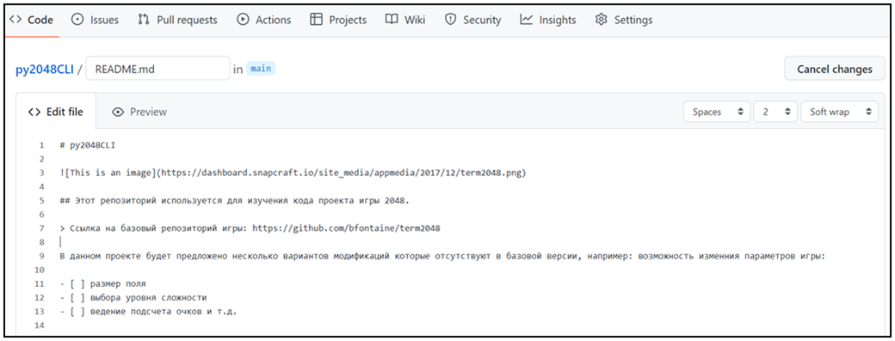
Рисунок 15 — Редактирование описания репозитория
Чтобы посмотреть, как будет отображаться информация с описанием на странице, нужно переключиться на вкладку «Preview» (рисунок 16).
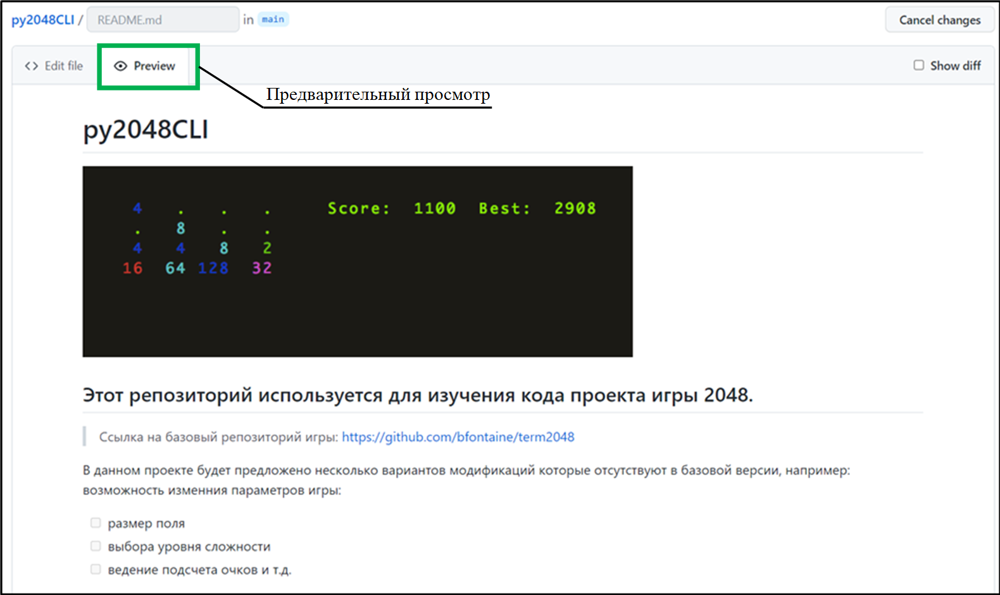
Рисунок 16 — Предварительный просмотр c использованием стилей Markdown
Когда отображение справочной информации о нашем проекте будет удовлетворять нашим интересам, нужно сохранить изменения (рисунок 17), нажав на кнопку «Commit change». Кстати, это будет зарегистрировано системой git как создание нового коммита (commit). Это значит, что файл «Readme.md» изменил свое содержание и, следовательно, нужно его обновить.
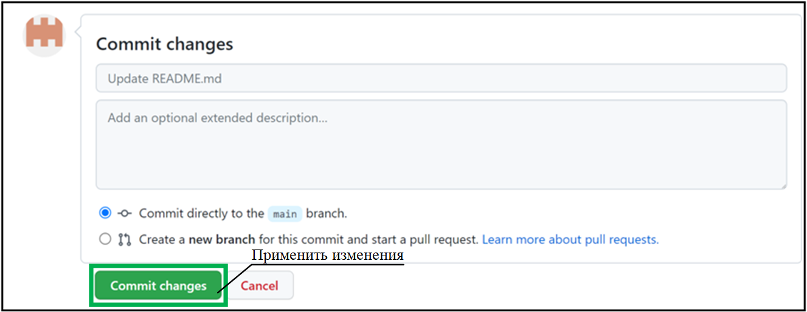
Рисунок 17 — Сохранение изменений в файле Readme
Далее нам нужно загрузить код из нашего локального репозитория (на компьютере) в удаленный репозиторий GitHub. Для этого нужно скопировать путь к удаленному репозиторию (рисунок 18).
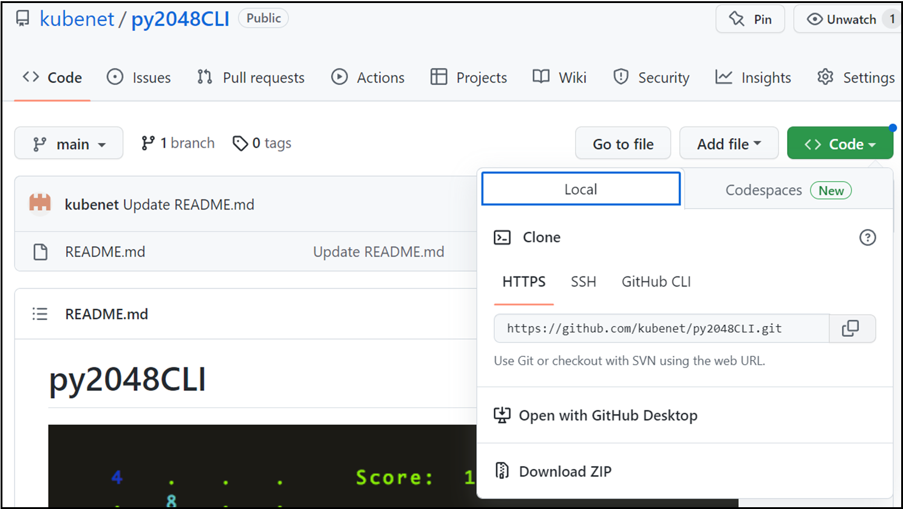
Рисунок 18 — Адрес удаленного репозитория в GitHub
Теперь перейдем в окно консоли git. Нам надо добавить ссылку на удаленный репозиторий в конфигурацию git на нашем локальном репозитории, чтобы система git понимала, куда отправлять код (сервер и репозиторий).
# Проверка удаленного адреса репозитория
git remote -v
# Указание на новый удаленный репозиторий
git remote add origin «*ссылка_на_удаленный_репозиторий*»
# Отправка изменений локального репозитория в удаленный, помеченный как источник
git push origin master
Система git потребует авторизации на сервере github. Нужно будет ввести логин и пароль, указанный при регистрации.
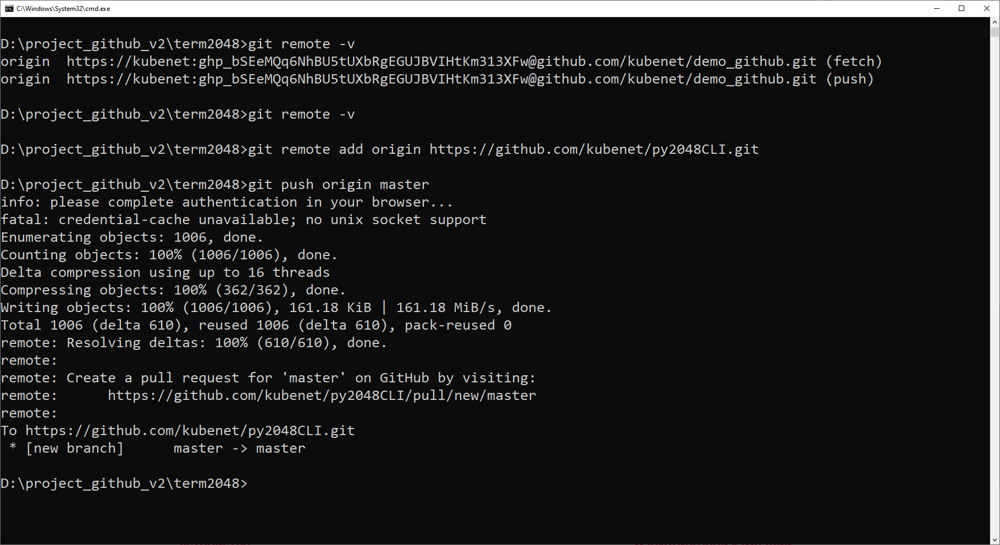
Рисунок 19 — Успешная загрузка локального репозитория на GitHub
После успешной загрузки кода из локального репозитория мы увидим наши файлы в репозитории на GitHub (рисунок 20).
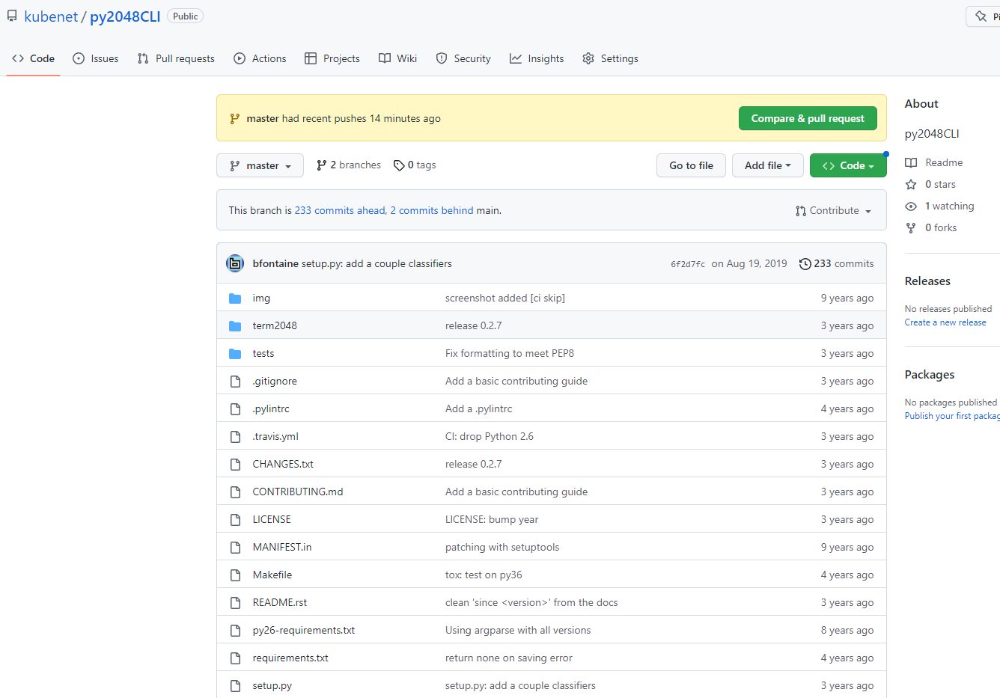
Рисунок 20 — Файлы проекта в удаленном репозитории GitHub
Альтернативный вариант
Мы подробно рассмотрели вариант работы с GitHub, но есть и более простой способ создать копию чужого репозитория. Если вы хотите вносить свой вклад в уже существующие проекты, в которых у вас нет прав на внесение изменений путем их отправки (push), вы можете создать свое собственное ответвление (fork) проекта. Это означает, что GitHub создаст вашу собственную копию проекта, она будет находиться в вашем пространстве имен, и вы сможете легко менять ее путем отправки (push) изменений.
Примечание Исторически так сложилось, что англоязычный термин «fork» (создание ветвления проекта) имел негативный контекстный смысл. Он означал, что кто-то повел проект с открытым исходным кодом в другом, отличном от оригинала, направлении. Иногда данный термин также означал создание конкурирующего проекта с другими авторами. В контексте GitHub «fork» просто означает создание ветвления проекта в собственном пространстве имен, что позволяет вносить публичные изменения и делать свой собственный вклад в более открытом виде.
Таким образом, авторы проектов не обеспокоены тем, чтобы пользователи, которые хотели бы выступать в роли соавторов, имели право на внесение изменений путем их отправки (push). Люди просто могут создавать свои собственные ветвления (fork), вносить туда изменения, а затем отправлять свои внесенные изменения в оригинальный репозиторий проекта, создавая запрос на принятие изменений (Pull Request). Сами же запросы на принятие изменений (Pull Request) будут описаны далее. Запрос на принятие изменений (Pull Request) откроет новую ветвь с обсуждением отправляемого кода, и автор оригинального проекта, а также другие его участники, могут обсуждать предлагаемые изменения до тех пор, пока автор проекта не будет ими доволен, после чего сможет добавить предлагаемые изменения в проект.
Для того, чтобы создать ответвление проекта, зайдите на страницу проекта и нажмите кнопку «Создать ответвление» («Fork»), которая расположена в правом верхнем углу.
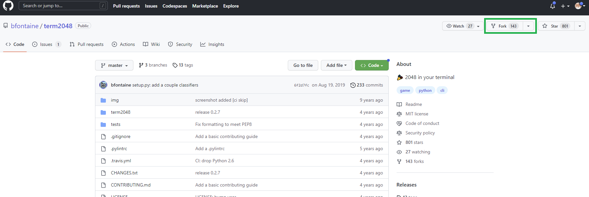
Далее
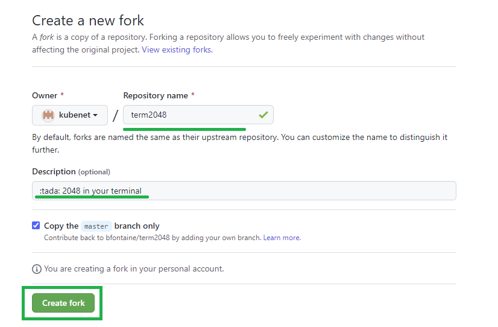